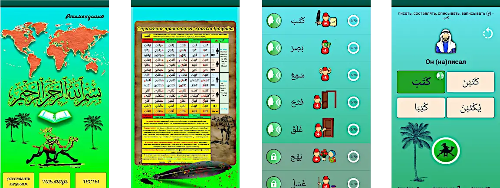
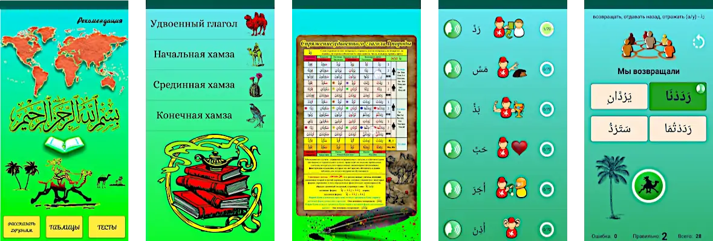

(تَصْرِيفُ الأَفْعَالِ) Спряжение арабского глагола является одним из основных фундаментов арабского языка, без которого невозможно освоить и понять этот прекрасный язык. Но, к сожалению, многие изучающие арабский язык "опускают свои руки" столкнувшись с этой не простой частью арабской грамматики. Изучив несколько таблиц разных глаголов, не всегда понятных правил и разъяснений, человек начинает терять терпение и уверенность в своих силах при первых попытках запомнить эту информацию. Помимо этого необходимо иметь свободное время и место для практических занятий, поиска глаголов и сопоставления их с таблицами, что является непосильной задачей для большинства занятых людей.
Благодаря нашим сериям приложений "Арабские глаголы - тесты" Вы освоите одну из самых сложных частей арабской грамматики - спряжения арабского глагола.
Мы постарались учесть все эти моменты и сделать максимально понятную и полезную программу обучения.
Программа курса приложения направлена на концентрацию Вашего внимания именно на определенной задаче – запоминания Вами форм спряжения арабских глаголов до автоматизма, путем постоянного тестирования. Вам не понадобиться искать в учебниках грамматическую таблицу, множество различных глаголов в словарях, искать время и место для того, чтобы переписывать и спрягать глаголы, достаточно лишь скачать наше приложение, ознакомиться с нашей подробной таблицей, и начать тестировать себя в любом удобном для Вас месте, снова и снова, путем проб и ошибок, двигаясь к цели освоения арабского языка.
Даже если Вы будете уделять в день по 10 - 15 минут, не обращая внимания на ошибки, не теряя терпения и постоянства, то результат не заставит себя ждать!
Арабские глаголы - тесты
Данное приложение является первой частью в учебной серии по спряжению арабских глаголов. Оно поможет Вам научиться спрягать самые распространенные - трехбуквенные правильные глаголы I-ой породы и даст Вам понимание построения спряжений для последующих пород глаголов. Благодаря этому приложению Вы сможете проспрягать любой новый выученный глагол в более 80 формах спряжения, без дополнительных подсказок. Приложение содержит: - Грамматическую таблицу спряжения правильного глагола в прошедшем, настоящем, будущем временах (в активных и пассивных формах спряжения), а также повелительную форму спряжения. - 15 глаголов - распределенных по уровню сложности тестирования. - 1050 иллюстрированных тестов (для облегчения запоминания женского и мужского рода были использованы картинки мужчин и женщин). - 1050 аудио записей правильных ответов.

Арабские глаголы - тесты 2
Данное приложение является второй частью в учебной серии по спряжению арабских глаголов. Оно поможет Вам научиться спрягать удвоенные и хамзованные глаголы I-ой породы. Приложение содержит: - Грамматическую таблицу спряжения удвоенного глагола, в прошедшем, настоящем, будущем временах (в активных и пассивных формах спряжения), а также повелительную форму спряжения. - Три грамматические таблицы спряжения глагола с хамзой, в прошедшем, настоящем, будущем временах (в активных и пассивных формах спряжения), а также повелительную форму спряжения. - 15 глаголов - распределенных по уровню сложности тестирования. - 1050 иллюстрированных тестов (для облегчения запоминания женского и мужского рода были использованы картинки мужчин и женщин). - 1050 аудио записей правильных ответов.
